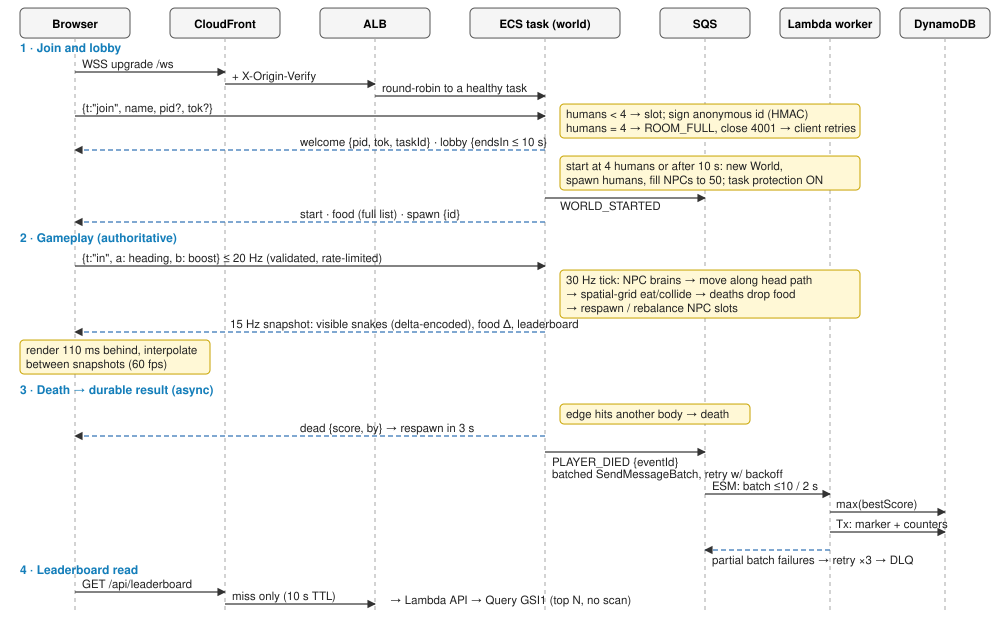
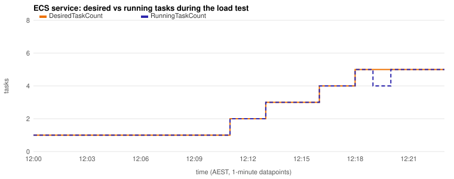
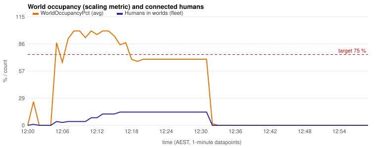
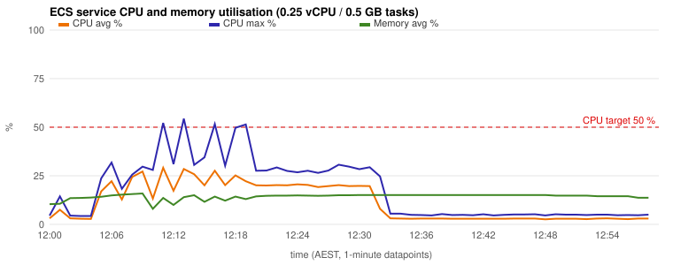

| Student | Yun Chi Yip |
| Student ID | n5528712 |
| QUT username | n5528712@qut.edu.au |
| Deployed application | https://d3riy98bj197ur.cloudfront.net/ |
| AWS region / account | ap-southeast-2 · 901444280953 |
| Date | 19 October 2026 |
Generative AI was used extensively in this assessment. Anthropic's Claude (through the Claude Code
agentic coding tool) worked under my direction and on my instructions: it inspected the starting repository,
designed the architecture, wrote the server, client, Lambda, infrastructure-as-code and test code,
ran the local, Docker and AWS deployments and tests, collected the evidence in the evidence/ folder,
and drafted this report from that evidence. I set the requirements, scope and constraints, provided the account
access and the starting code (a fork of Loonride's open-source Slither.io tutorial clone), reviewed the outputs,
and am responsible for the submitted work.
All measurements reported here come from the deployed system and test runs, not from the AI's assumptions. ⟦Replace or extend this statement with the exact wording QUT/CAB432 requires, and describe your own review and contribution accurately.⟧
This project turns Loonride's single-player Phaser Slither.io tutorial into a cloud-native multiplayer game, deployed on AWS in ap-southeast-2 as a vehicle for demonstrating scalable cloud architecture. The original sprites, renderer and gameplay rules are reused, but every outcome (movement, eating, growth, collision, death, score) is now decided by a server-side simulation. Browsers send only steering intent over WebSockets and render interpolated snapshots.
The unit of scale is an independent authoritative world: one ECS Fargate task runs one 50-snake world for
up to four humans, with NPCs filling the remaining slots. Worlds share no real-time state, so capacity grows
linearly by adding tasks (worlds = ceil(humans / 4)), while everything of lasting value leaves the task as
events (SQS → Lambda → DynamoDB). CloudFront is the single HTTPS/WSS entry point: it serves the fingerprinted
client from a private S3 bucket, caches the leaderboard for 10 s, and forwards WebSockets to an Application Load
Balancer that accepts only CloudFront's secret header.
Key measured results:
The CAB432 account's guardrails (no IAM role, security group or certificate creation; no deletion of buckets or log groups) forced several adaptations, which are documented with their residual risks in §3.2.
Real-time multiplayer games are a demanding workload for cloud architecture. They need stateful compute that updates many entities dozens of times per second, low-latency bidirectional communication, durable records of outcomes, and capacity that follows a player population that changes through the day. This project uses a small Slither.io-style game as a vehicle to build and measure such a system on AWS.
The starting point was Loonride's open-source tutorial clone of Slither.io (Loonride, 2017). It is a single-browser Phaser CE 2.6.2 game in which a P2 physics engine running in the page decides movement, collisions, food consumption and growth for one player and two bots. Nothing in it is networked, and the browser is the authority on every outcome, so a multiplayer version could not trust it. The project keeps the original sprites, renderer, movement constants and rules, and moves all authority to a server-side simulation.
NPCs = 50 − humans).ROOM_FULL and is routed elsewhere.The engineering objectives were a cloud architecture that (i) scales horizontally with demand using
non-Lambda auto-scaling, (ii) distributes connections across stateful workers, (iii) keeps durable data outside
those workers, (iv) caches static content at the edge, (v) processes outcomes asynchronously and idempotently,
(vi) is observable and recovers from failures, and (vii) stays cost-proportionate. Every claim in this report is
backed by a captured artefact. Evidence identifiers such as [E11] refer to the register in
Appendix B and files in the repository's evidence/ folder.
| Concept | Responsibility in this system | Why it is needed |
|---|---|---|
| Edge cache / CDN | Terminates TLS near players. Caches fingerprinted static files for a year and the leaderboard response for 10 s. Proxies WebSocket upgrades and API calls to the private origin. | Static delivery scales independently of game servers. Repeat requests never reach the origin. A single origin for page, API and socket removes CORS and needs one certificate. |
| Object storage | Holds the built client (HTML, one JS bundle, Phaser, sprites), readable only by the CDN. | Durable, cheap, serverless hosting for immutable assets. |
| Load balancer | Accepts traffic only from the CDN, health-checks workers, and assigns each new WebSocket to a healthy worker (dispatcher-push). | Hides individual workers, removes failed ones from rotation, and spreads new sessions. |
| Containerised game workers | Each worker process owns exactly one authoritative world: lobby, 50 snake slots, food, 30 Hz tick, 15 Hz snapshots. | Real-time simulation needs long-lived in-memory state, held sockets and a steady CPU budget. Short-lived functions fit this poorly. |
| Horizontal autoscaler | Adds or removes workers from measured world occupancy and CPU. Workers hosting players opt out of scale-in. | Capacity follows demand without terminating games in progress. |
| Message queue + dead-letter queue | Durable buffer for domain events (PLAYER_DIED, SESSION_ENDED, WORLD_STARTED, WORLD_COMPLETED). | Decouples the latency-critical tick from database writes, absorbs bursts, retries failures and isolates poison messages. |
| Asynchronous worker (function) | Applies events in batches, idempotently. | Scales to zero. Retry semantics come from the queue. |
| Structured key-value store | Player profiles, death history, world records, idempotency markers, and a secondary index ordered by best score. | Durable state lives outside the stateful workers. Every access is a key lookup or an ordered range, never a scan. |
| Read API (function) | Serves the leaderboard and a player's statistics. | Keeps workers focused on simulation. Responses are cacheable at the edge. |
| Monitoring system | Structured logs, platform and custom metrics, dashboards, alarms. | Drives scaling decisions and makes failures diagnosable. |
The central decision is that the unit of scale is an independent world. A world is small (50 snakes, ≤4 humans), lives entirely in one worker's memory, and shares no real-time state with any other world. Scaling out means adding worlds, not partitioning one world across machines.
This removes distributed consistency from the hot path. Each 30 Hz tick is a single-threaded loop over local memory (measured at about 0.3 ms per tick for a full world, §4.5), with no cross-node locks, replicated physics or consensus protocol. It also makes capacity planning arithmetic: because NPCs are workload rather than users,
requiredWorlds = ceil(concurrentHumans / 4) runningWorkers ≈ ceil(concurrentHumans / (4 × targetOccupancy))
The trade-off is explicit. A world's transient state exists only inside its worker. If that worker fails or is replaced, the positions and current lengths in that world are lost, and its players reconnect to another world within seconds. That is acceptable for a casual arena game, where a round is short and losing it costs a player one life. Everything with long-term value (scores, deaths, best scores, world summaries) leaves the worker as an event at the moment it happens and is stored durably. Restoring exact world state would need checkpointing or replication at tick rate, a large cost in complexity, bandwidth and latency for little player benefit. A single global world was rejected for the same reason: it would need spatial partitioning with entity hand-over and cross-node collision detection.
ROOM_FULL and closes. The client retries after 150–600 ms jitter, so the load
balancer can choose another worker. After five quick attempts it backs off exponentially (≤5 s) for about three
minutes while the autoscaler adds a world.| Decision | Chosen | Rejected | Reasoning |
|---|---|---|---|
| Real-time transport | WebSocket | HTTP polling; WebRTC/UDP | Polling costs one request per update per client at 15 Hz. WebRTC needs signalling and TURN servers and isn't proxied by standard CDNs or load balancers. WebSocket gives one full-duplex connection that passes through the CDN and load balancer. |
| Authority | Server-authoritative | Client-authoritative (original game) | A client could forge position, score or invulnerability. The leaderboard is only meaningful if the server is the referee. |
| World topology | Many small independent worlds | One global world | Linear scale-out without distributed state (§2.2). |
| Game compute | Managed containers | Functions; self-managed VMs | Functions are short-lived and stateless. VMs add patching and capacity management, and only pay off at sustained high utilisation. |
| Persistence path | Async queue | Synchronous writes from the game loop | Synchronous writes add network latency and database throttling to the tick and connection path. A queue absorbs bursts and retries. |
| Static delivery | CDN + private object store | Served by game workers; public bucket | Workers would spend CPU and bandwidth on static files. A public bucket has no edge cache and more exposure. |
| Datastore | Key-value store + ordered index | Relational database | Access patterns are key lookups and "top N by score". Pay-per-request with no instance to run. Joins are unused. |
| Scaling signal | World occupancy (custom) + CPU | CPU only; request count | Request count is meaningless for long-lived sockets. Measurement showed a full world uses only ~20–30 % of its CPU allocation, so CPU alone never triggers (§4.5). Occupancy measures user capacity directly. |
| Lost world | Reconnect to any world | Checkpoint/replicate state | Disproportionate cost for casual sessions. Durable stats are already safe. |

| Concept | AWS service | Deployed configuration and rationale |
|---|---|---|
| Edge cache / CDN | Amazon CloudFront | One distribution (d3riy98bj197ur.cloudfront.net), HTTP/2 and HTTP/3, PriceClass_All (Australian edge locations are only in this class; requests were served from BNE50, Brisbane). Default behaviour → S3 with the managed CachingOptimized policy. /ws → ALB with CachingDisabled and AllViewerExceptHostHeader, which forwards the WebSocket upgrade headers. /api/* → ALB with a custom policy (default TTL 10 s, cache key = limit, id query strings only). The origin request carries a secret X-Origin-Verify header. |
| Object storage | Amazon S3 | Private bucket n5528712-a3-frontend-901444280953, Block Public Access on, bucket policy allowing s3:GetObject only to this distribution through Origin Access Control (OAC). Objects carry Cache-Control: public, max-age=31536000, immutable (content-hashed names) or no-cache (index.html). |
| Load balancer | Application Load Balancer | n5528712-a3-alb across three AZs, idle timeout 120 s. Listener rules forward /ws, /health, /ready, /status to an IP target group (port 8080, health check /ready every 10 s, deregistration delay 15 s, round robin) and /api/* to a Lambda target group, only when the secret header is present. The default action is a fixed 403. |
| Game workers | Amazon ECS on AWS Fargate | Cluster n5528712-a3-cluster (Container Insights on), service n5528712-a3-game. Task: 0.25 vCPU, 0.5 GB, ARM64 (Graviton), image from ECR, container health check on /health, stopTimeout 30 s, deployment circuit breaker with rollback. Tasks run in private subnets with no public IP. |
| Container registry | Amazon ECR | a3/n5528712-a3-game, scan on push, lifecycle keeps the newest 10 images. Image built for linux/arm64, node:22-alpine, non-root. |
| Autoscaler | Application Auto Scaling (ECS Service Auto Scaling) | Scalable target 1–6 tasks. Target tracking on the custom metric WorldOccupancyPct (Average, target 75 %) and on ECSServiceAverageCPUUtilization (target 50 %). Scale-out cooldown 60 s, scale-in 180 s. Tasks with players set ECS task scale-in protection through the ECS agent endpoint. |
| Message queue | Amazon SQS | Standard queue n5528712-a3-events: visibility timeout 60 s (6× the worker timeout), retention 4 days, long polling 20 s, SSE. Redrive to n5528712-a3-events-dlq after maxReceiveCount = 3 (retention 14 days). |
| Async worker | AWS Lambda | n5528712-a3-event-worker, Node.js 22, arm64, 256 MB, 10 s timeout. SQS event source mapping: batch 10, 2 s batching window, ReportBatchItemFailures, maximum concurrency 2. |
| Read API | AWS Lambda (ALB target) | n5528712-a3-leaderboard-api, 128 MB. Returns Cache-Control: public, max-age=10 for the leaderboard. |
| Structured store | Amazon DynamoDB | n5528712-a3-game, on-demand, SSE, TTL on ttl, sparse GSI GSI1 (§3.4). |
| Configuration and secrets | Secrets Manager, SSM Parameter Store, environment | The HMAC key that signs anonymous player IDs is a generated Secrets Manager secret, read by tasks at start-up with the task role. The CloudFront→ALB header value is an SSM SecureString. All other settings are task-definition environment variables. The image contains no credentials or secrets. |
| Monitoring | Amazon CloudWatch | JSON logs. Custom metrics through the Embedded Metric Format (namespace n5528712/A3Game: occupancy, humans, entities, tick p50/p99, snapshot bytes, worlds started/ended, events dropped). Dashboard n5528712-a3. Five alarms (DLQ not empty, worker errors, queue backlog, unhealthy targets, slow tick). CloudFront additional metrics (cache hit rate). |
The shared CAB432 account applies explicit IAM deny policies to the student role. They were discovered during
deployment, recorded in docs/current-state.md, and each forced a concrete design change:
| Denied action (verified) | Consequence | Adaptation |
|---|---|---|
iam:CreateRole | Roles can't be defined in the templates. | The pre-provisioned Execution-Role-CAB432-ECS, Task-Role-CAB432-ECS and CAB432-Lambda-Role are used. Their policies can't be read, so least privilege can't be demonstrated (a stated limitation). Features were verified empirically: SQS send, Secrets Manager read and task protection from tasks; SQS consume and DynamoDB from Lambda. |
ec2:CreateSecurityGroup | No dedicated SGs restricting the ALB to CloudFront or the tasks to the ALB. | The shared CAB432SG is used. Compensating controls: (1) tasks in private subnets with no public IP, so they are unreachable from the internet; (2) the ALB forwards only requests carrying the secret header that only CloudFront adds. Direct ALB requests receive 403 [E19]. |
acm:RequestCertificate | No TLS certificate for an ALB origin hostname. | Viewer ↔ CloudFront is HTTPS/WSS. CloudFront ↔ ALB is HTTP (a documented residual risk; with a certificate the origin policy would change to https-only). |
s3:DeleteBucket, s3:PutEncryptionConfiguration, s3:PutLifecycleConfiguration | The first data-stack deployment could not roll back its bucket (ROLLBACK_FAILED). | Buckets are created idempotently by ensure-buckets.sh and referenced by the stacks. Default SSE-S3 encryption still applies. New buckets have S3 attribute-based access control, so tags are applied with s3control tag-resource. |
logs:DeleteLogGroup, logs:PutRetentionPolicy | Same rollback problem; retention can't be set. | Log groups are created by script. Retention stays at the default (a cost note in §5). |
lambda:GetFunction on not-yet-existing functions | CloudFormation's Lambda resource handler fails before creating the function. | Functions, the ALB invoke permission and the SQS event source mapping are created or updated by deploy-lambdas.sh (tagged create-function is permitted). The stack references the function ARN. |
join, in, respawn, ping), validates every field (finite numbers, ranges, UUID/hex formats), caps message size at 1 KB, sanitises and truncates display names to 16 characters (rendered with textContent), rate-limits each socket with a token bucket (40 msg/s, sustained abuse closes the socket), and ignores any position, score or length a client sends. Unit and integration tests cover forged fields and malformed JSON.| Entity | PK | SK | Notable attributes |
|---|---|---|---|
| Player profile | PLAYER#<id> | PROFILE | displayName, bestScore, deaths, kills, sessions, playMs. GSI1PK='LB', GSI1SK=bestScore written only once a score exists (sparse index). |
| Death record | PLAYER#<id> | DEATH#<time>#<eventId> | score, length, kills, killedBy, survivedMs, worldId |
| World record | WORLD#<worldId> | META | start/end times, humans, NPCs, lobby wait, peak humans, end reason |
| Idempotency marker | EVENT#<eventId> | EVENT | type, processedAt, ttl = now + 7 days |
Access patterns: leaderboard = Query GSI1 (GSI1PK='LB', descending, Limit N); player stats =
GetItem; history = Query PK, begins_with(SK,'DEATH#'). No access pattern uses a Scan. The leaderboard
partition key is a single value. At far more than this project's write rate (≫1,000 writes/s) it would be
write-sharded (LB#0..n) and merged on read.
Four CloudFormation stacks (data, backend, frontend, monitoring) plus idempotent
CLI scripts reproduce the deployment with one command (infra/scripts/deploy.sh). All parameters come from
environment variables, and every taggable resource carries purpose = assessment 3 and
qut-username = n5528712@qut.edu.au. The data stack uses DeletionPolicy: Retain and is separate from
compute, so the backend can be torn down without losing results. (The DynamoDB table survived an early failed
stack and was imported into the new stack rather than deleted.)
Game tasks emit one JSON log line per event with taskId, worldId, playerId and
eventId, so a single event can be followed from event_published in the game log to
event_processed in the worker log. Custom metrics use the Embedded Metric Format: a JSON line every 10 s
that CloudWatch Logs converts into metrics, so no metrics API permission or SDK is needed. The metric dimension is
the service name only, so the Average across tasks is the fleet-wide value the scaling policy consumes.
The original game delegated motion to P2 physics: the head was moved with moveForward, its positions
were pushed into a headPath, each of 30 body sections was placed on that path about 17 × scale
behind the previous one, and an invisible "edge" circle locked in front of the head killed the snake when it
touched another snake's body. P2 is coupled to Phaser sprites and cannot run headless. The server therefore
re-implements the same model directly (server/src/game/snake.js): the same constants (start scale 0.6,
30 sections, 130/200 px/s, a turn rate of 2 rad/s derived from P2's rotateLeft(40) and its px→m factor of 20,
growth ×1.01 per food), arc-length placement of sections along the head path, and an edge-point collision test.
A spatial hash grid makes collision and food queries local. A full 50-snake world ticks in about 0.3 ms on a laptop
core and the 37 server tests pin the behaviour down.
The NPCs keep the original bot's "trend" wander (keep turning one way, flip with probability 1/20) and add three priorities: stay inside the arena, avoid bodies and approaching heads, and seek nearby food. Instrumenting deaths during development showed that 69 % of NPC deaths were head-to-head collisions while chasing the same food. Adding an "approaching head" check raised median NPC lifetime from 15 s to 23 s, and that was judged sufficient (the brief asks not to over-engineer AI).
The client keeps the original assets and drawing code (tinted circle sections, the shadow.js light-up
effect while boosting, and the eye pair) but now only renders server state. Because circle.png is solid red,
tinting could only produce reds. The client desaturates it once at start-up into a white texture, which keeps the
original outline shading and lets each snake take any colour.
| Original (client-authoritative) | Now |
|---|---|
| P2 physics in the browser decides position, collisions, eating, growth, death | Server tick at 30 Hz decides everything. The browser sends heading + boost only. |
| 1 player + 2 bots, 1,600 × 1,000 px world | ≤4 humans + NPCs = 50 snakes, circular arena of radius 2,400 px, 700 ambient food |
| Food pulled into the head by a revolute constraint | Head–food overlap test. Food deltas are applied on the client at the snapshot's render time. |
| No identity, score or leaderboard | Signed anonymous ID, score, in-world top 10, persistent all-time top 10 |

Each task's Room runs a small state machine: idle → (first human) → lobby → (4 humans or 10 s) →
running → (last human leaves) → idle. Leaving running discards the world entirely, so an empty task does no
simulation work (≈3 % CPU, [E10]). Every tick enforces the slot invariant
NPCs = 50 − humans: a late joiner removes the smallest NPC, and a departing human is replaced by a new NPC.
A dead human keeps their slot during the 3 s respawn timer, so the active count briefly reads 49. Unit tests check
the fill for 1–4 humans (49/48/47/46 NPCs), the ≤10 s lobby, the immediate start at four humans, ROOM_FULL for the
fifth, late join, and world completion [E4, E5].
Snapshots contain only the snakes whose bounding box intersects the player's viewport plus a 350 px margin. Each snake is serialised once per snapshot and the fragment reused for every client. Food changes travel as deltas. The client buffers snapshots, maps server time to local time using the minimum observed one-way offset, and renders 110 ms in the past, interpolating section positions between the two surrounding snapshots.
Bandwidth was measured, not assumed, and it turned out to be the dominant running cost (§5). Two optimisations followed from the measurements, both captured by the load tester:
| Version (same 4-player, 40 s run, 0.25 vCPU container) | Bytes on the wire | Per player | Evidence |
|---|---|---|---|
| Absolute coordinates, JSON | 14.6 MB | ≈ 91 KiB/s | E14a |
| Delta-encoded body points (head absolute, then small offsets) | 8.6 MB (−41 %) | ≈ 54 KiB/s | E14b |
| + WebSocket permessage-deflate (level 1, context takeover) | 2.3 MB (−74 % vs. delta) | ≈ 14.7 KiB/s | E17 |
Compression added about +2.5 points of host-core CPU (≈ +10 points of a 0.25 vCPU task), a good trade because
egress costs more than compute in this design. Enabling compression also exposed a shutdown bug: sends become
asynchronous, and the server terminated sockets before the final bye message was flushed. The integration
test caught it, and shutdown now waits up to 1.5 s for close handshakes.
The game loop never waits for the network to persist results. publish() appends an event envelope
(eventId UUID, type, version, time, worldId, taskId, payload) to an in-memory buffer. A flusher sends batches of
up to 10 with SendMessageBatch. Rejected entries are retried with exponential backoff and jitter, up to 4
times, and the buffer is bounded at 5,000 events (oldest dropped). An event that still can't be sent is written
in full to the log (event_dropped), so it is recoverable. On SIGTERM the buffer is flushed within a deadline.
In the resilience test the terminating task flushed 206 events with 0 dropped [E16].
SQS standard queues deliver at least once and do not preserve order, so the worker is written for both:
TransactWriteItems together with a conditional put of EVENT#<eventId>. A redelivery fails the
condition and changes nothing. The best-score update is a conditional "max"
(attribute_not_exists(bestScore) OR bestScore < :s), which is idempotent by nature, so it runs before
the transaction: a crash between the two can never lose a high score.SET updates, so WORLD_STARTED and WORLD_COMPLETED commute. In the
deployment a PLAYER_DIED was processed before its world's WORLD_STARTED [E8], and the result was still correct.batchItemFailures, so only those records return to the queue. After three receives SQS moves them to the
DLQ, which raises an alarm. A deliberately malformed message was rejected three times, 60 s apart (the visibility timeout), then moved to the DLQ, and the dlq-not-empty alarm went to ALARM [E16].The leaderboard is read by a separate Lambda behind the ALB. It queries the sparse GSI in descending order and
returns Cache-Control: public, max-age=10. CloudFront therefore answers repeated reads at the edge (§4.7), and
at most one request per 10 s per edge location reaches DynamoDB, regardless of player count.
The brief suggested starting with CPU target tracking. Local measurement in a container capped at 0.25 vCPU,
followed by Fargate measurement, showed why CPU alone can't drive this system. A world can never hold more than four
humans, so a full world's CPU is bounded: ≈20–30 % of a 0.25 vCPU Graviton task, while an idle task sits at
≈3 % [E10, E15]. With any sensible CPU target (40–50 %), the service would stay at one task while every world is
full and new players wait. The scaling question is really "are there free seats?", so the primary policy tracks a
custom metric, WorldOccupancyPct = humans / 4 × 100, averaged over all tasks, with a target of 75 %. Target
tracking then keeps tasks ≈ ceil(humans / 3), about one empty world in four. CPU target tracking at 50 % stays as a
safety net (for example if world size or NPC count were raised). Application Auto Scaling scales out when either
policy asks and scales in only when both agree.
Scale-in must not end games in progress. Each task enables ECS task scale-in protection when its world starts (renewed every 5 minutes, expiring after 15 if the process dies) and releases it when the world empties. During the test, the four tasks hosting players were protected and the newly started empty task was not [E12]. The autoscaler can therefore only remove empty worlds.
Fourteen synthetic players (load-tests/websocket-load.js) joined through CloudFront
(wss://…/ws), ramping over 30 s, for 25 minutes. They behave like real clients: they join, retry
ROOM_FULL, steer with wandering input at 10 Hz, boost occasionally, respawn after dying, and ping every 2 s.
The load is genuine gameplay. Nothing is a busy loop. Because one world takes four humans, ten players are
initially rejected, which is exactly the situation the occupancy policy exists for.


| Time (AEST) | Scaling activity (Application Auto Scaling) | Players in worlds / tasks |
|---|---|---|
| 12:07 | Load starts; 1 task, occupancy → 100 % | 4 in world, 10 receiving ROOM_FULL |
| 12:10:15 | "Setting desired count to 2." Task running and healthy ≈ 40 s later | 8 / 2 |
| 12:12:15 | "Setting desired count to 3." | 12 / 3 (4 + 4 + 4) |
| 12:15:15 | "Setting desired count to 4." | 14 / 4 (4 + 4 + 4 + 2): every player placed |
| 12:17:15 | "Setting desired count to 5." Occupancy 14/20 = 70 %, inside the target band, so steady | 14 / 5 (one empty world as headroom) |
| ⟦SCALE_IN_ROWS⟧ |
Each step needed three consecutive one-minute datapoints above target plus the 60 s scale-out cooldown, so the
fleet grew by one world roughly every 2–3 minutes, and the sequence 1→2→3→4→5 followed
ceil(tasks × occupancy / 75). New tasks were registered and healthy 30–45 s after each decision. Across the run the
load tester recorded 0 connection errors, WebSocket RTT p50 16 ms / p95 ⟦RTT_P95⟧ ms from Brisbane via the
BNE edge, and a snapshot interval of p50 67 ms (15 Hz) [E14]. Per-task CPU stayed at 20–30 % and the p99 tick
time stayed under ⟦TICK_P99⟧ ms of the 33 ms budget [E15].
Load distribution. The ALB uses round robin for new connections. Combined with ROOM_FULL and client
retry, this acts as simple decentralised matchmaking: the load tester's per-task counts show players spread evenly
over the new worlds as they appeared (4/4/4/2) [E14], with targets healthy in all three AZs [E13].

| Failure | What happened (measured) |
|---|---|
| Game task lost during play (task stopped while hosting 4 players) | 12:18:17 stop issued. 12:18:59 target deregistered and a replacement task started. ≈12:19:15 the ALB closed the four WebSockets at the end of the 15 s deregistration delay. All four players rejoined other worlds within one 5 s sample (two filled a world with free seats, two went to the idle headroom world). The old task completed its world, published four SESSION_ENDED events, received SIGTERM at 12:19:24, flushed 206 events with 0 dropped and exited with code 0. The replacement was healthy at 12:19:28 and the service reached a steady state at 12:19:47 [E16]. |
| Poison message | Received three times, 60 s apart, logged as event_malformed each time, then moved to the DLQ. The DLQ alarm fired [E16]. |
| Duplicate or out-of-order delivery | Idempotency marker and commutative updates (unit-tested; out-of-order delivery observed in production) [E8]. |
| Transient AWS errors | Publisher: per-entry retry with exponential backoff and jitter, bounded at 4 attempts and a 5,000-event buffer. Worker: the failed record returns to the queue (unit-tested). |
| Hung tick loop | /health fails if no tick for 2 s. The container health check and ECS replace the task. |
| Full worlds | Client: five fast jittered retries, then bounded exponential backoff (≤5 s) for ~3 minutes, never forever. The load test verified that waiting players were seated as capacity arrived. |
One finding changed the understanding of graceful shutdown. Because ECS drains the ALB target before sending
SIGTERM, the ALB, not the application, ends WebSocket sessions when the deregistration delay expires. The server's
bye message is only delivered when the process itself initiates shutdown. Resilience therefore rests on the
client's reconnect path, and the measurement shows that path is fast.
tests/cache-test.sh requested the same objects five times from Brisbane [E6]:
| Object | Origin | Result |
|---|---|---|
app.<hash>.js (immutable, 1 year) | S3 via OAC | Hit from cloudfront on every request, Age 41 → 45 s, ≈20 ms, POP BNE50 |
/api/leaderboard?limit=10 (10 s TTL) | ALB → Lambda → DynamoDB | First request Miss, 615 ms; then Hit, 18–31 ms with Age 1 → 4 s |
index.html (no-cache) | S3 | RefreshHit: revalidated each time, so new deployments go live immediately |
Content hashing makes the long TTL safe: a new build produces new file names, and only index.html is
invalidated on deploy. The cached API means the leaderboard costs at most one Lambda invocation and one DynamoDB
query per 10 s per edge location, however many players open the join screen.
ws clients against the real server, covering shared world, 50 entities, forged and
malformed input, ping, ROOM_FULL close code, join timeout and graceful shutdown.tests/smoke.sh checks the deployed system through CloudFront, including a real WebSocket session ⟦SMOKE_RESULT⟧.Result: 50/50 automated tests pass (37 server, 13 Lambda) [E18].
Unit prices are on-demand Sydney / CloudFront-Australia rates read from the AWS public price-list files on 19 Oct 2026. (The Price List API is denied to the student role; free tier is ignored.) Resource quantities come from the deployment and the load tests.
| Driver | Measured | Unit price | Cost per player-hour |
|---|---|---|---|
| Fargate task (0.25 vCPU, 0.5 GB, ARM) | 1 task per ≤4 humans (×1/0.75 headroom) | $0.03885 vCPU-h + $0.00426 GB-h = $0.011843/task-h | ≈ $0.0039 |
| Snapshot egress via CloudFront | 54 KiB/s per player before compression; 14.7 KiB/s after | $0.114/GB (AU, first 10 TB) | ≈ $0.022 → ≈ $0.006 |
| ALB processed bytes (1 LCU = 1 GB/h) | same bytes as egress | $0.008/LCU-h (+ $0.0252/h fixed) | ≈ $0.0004 after compression |
| Events (SQS + Lambda + DynamoDB) | a few events per real player-minute, batched by 10 | $0.40/M SQS, $0.20/M Lambda, $0.71/M WRU | < $0.0002 |
Two conclusions shaped the implementation. First, egress, not compute, dominates. That justified delta encoding and permessage-deflate (§4.3), which together cut wire bytes by ~85 % and took the total cost per player-hour from ≈ $0.026 to ≈ $0.011. Second, the per-player compute cost is fixed by the world size (one 0.25 vCPU task per four seats), so the occupancy target is the main cost lever: 75 % keeps one empty world in four as joining headroom.
For a modest public deployment averaging 60 concurrent humans (peak 200), 24×7:
average worlds needed = ceil(60 / 4) = 15 running tasks at 75 % target ≈ ceil(60 / 3) = 20 peak (200 humans) = ceil(200 / 4) = 50 worlds → ≈ 67 tasks (MaxTasks raised from the demo cap of 6)
| Component | Basis | USD / month |
|---|---|---|
| Fargate | 20 tasks × $0.011843 × 730 h | 172.9 |
| ALB | $18.4 fixed + 3.2 LCU × $0.008 × 730 | 37.0 |
| CloudFront egress | 60 × 0.053 GB/h × 730 h = 2,321 GB × $0.114 (compressed) | 264.6 |
| SQS, Lambda, DynamoDB | ~1.3 M requests, ~0.5 M invocations, ~6.5 M WRU | ≈ 7 |
| CloudWatch | 11 custom metrics, Container Insights, ~9 alarms, ~10 GB logs | ≈ 14 |
| ECR, Secrets Manager, S3 | ≈ 0.5 | |
| Total | ≈ $0.011 per player-hour | ≈ 495 |
Without compression the same scenario would cost ≈ $1,180/month (egress ≈ $949). The minimum floor, at night with one idle world, is ≈ $40/month (ALB + one task + monitoring). The exact AWS Pricing Calculator inputs are in Appendix D. ⟦PRICING_CALCULATOR_LINK: create the public estimate from Appendix D and paste the link here⟧
Not included: the account's pre-existing NAT gateways, used only for image pulls and AWS API calls (~100 MB per task start); Container Insights at large fleet sizes; data transfer of the ~40 KB client bundle (cached in browsers for a year).
| Topic | Initially unknown | What was investigated / what happened | Effect on the design |
|---|---|---|---|
| Scaling signal for stateful worlds | Whether ECS CPU target tracking (the usual starting point) would react to game load. | Measured a full world (4 players + 46 NPCs) at ≈20–30 % of a 0.25 vCPU Graviton task. Per-world CPU is bounded by design (≤4 humans), so a 40–50 % CPU target would never fire. | A custom WorldOccupancyPct metric via EMF became the primary target-tracking signal, with CPU kept as a safety net. Scale-out was then reproducible (1→5 tasks). |
| ECS task scale-in protection | How to stop scale-in from terminating a world with players. | Used the ECS agent endpoint ($ECS_AGENT_URI/task-protection/v1/state), enabled when a world starts and renewed every 5 min. | Verified: active tasks protected, idle task not (E12). |
| ALB draining vs. SIGTERM for WebSockets | Assumed the server's SIGTERM handler would tell clients to reconnect. | The task-stop test showed ECS deregisters the target first, and the ALB closes long-lived WebSockets when the 15 s deregistration delay ends, about 10 s before SIGTERM. The bye message is never delivered for ALB-terminated connections. | Resilience comes from the client's reconnect path (verified: rejoin within one 5 s sample). Improvement: poll target health from the task to start draining earlier. |
| Account guardrails and CloudFormation | Which resource types the student role may create and delete. | Hit explicit denies one by one: stacks stuck in ROLLBACK_FAILED (undeletable buckets and log groups), early-validation failures, and CloudFormation's Lambda handler failing on GetFunction for a not-yet-existing function. | Split "what may not be deleted" out of CloudFormation into idempotent scripts. Imported a retained DynamoDB table into the new stack. Documented every workaround (§3.2). |
| Bandwidth as a cost driver | Expected compute to dominate. | Public price list + measured bytes showed CloudFront egress (≈$0.022/player-hour) far above Fargate (≈$0.003/player-hour). | Delta encoding (−41 %) and permessage-deflate (−74 %). Compression also exposed a shutdown-flush bug, now fixed and tested. |
| At-least-once, unordered delivery | How to make score aggregation safe under redelivery. | DynamoDB transactions with a conditional idempotency marker; an idempotent "max" for best score; commutative world updates. | Out-of-order delivery happened in production and the data stayed correct (E8). |
undefined for one tick. It serialised as null and was
drawn at (0, 0). It was found by checking rendered snake extents in the browser, fixed in grow(),
and covered by a regression test.ROOM_FULL after ~2 minutes, before auto-scaling could add capacity
(~3 min of alarm datapoints + ~1 min of task start). The retry policy became "five fast jittered attempts, then
bounded exponential backoff for ~3 minutes", in both the browser and the load tester.localStorage, hence the same player ID. An early "replace the
older connection" rule would have made two tabs evict each other in a loop, so it was removed.Evidence IDs (E#) refer to docs/evidence-register.md. Report sections: §2 Vendor-agnostic architecture,
§3 Vendor-specific implementation, §4 Application implementation, §5 Cost and sustainability.
| # | Pattern | Why this application needs it | Implementation | AWS service | How it is tested | Evidence | Report § | Demo |
|---|---|---|---|---|---|---|---|---|
| P1 | Structured persistence | Scores, deaths and the leaderboard must survive task loss and be queried by key or rank. | Single table + sparse GSI leaderboard. Idempotent transactional writes. | DynamoDB | Unit tests of the worker against an in-memory store. Deployed: die in game, then query the item and the GSI. | E9 | §3, §4 | 1:55–2:35 |
| P2 | Object storage | Frontend build and sprites need durable, cheap hosting with no servers. | Private bucket, OAC-only policy, cache headers set per object. | S3 | aws s3 ls. Direct S3 URL returns 403. CloudFront URL returns 200. | E2 | §3 | 0:00 |
| P3 | Edge caching | Static assets and leaderboard reads should not hit the origin every time. | Fingerprinted assets (1-year immutable). /api/leaderboard 10 s TTL. | CloudFront | tests/cache-test.sh shows X-Cache: Miss then Hit, and Age increasing. CloudFront cache statistics. | E6 | §3, §5 | 1:20–1:55 |
| P4 | Realtime communication | 15 Hz state to many clients plus low-latency input. | ws server, JSON protocol, interest management, client interpolation, ping/RTT. | ALB + CloudFront WebSocket support | Integration test (two clients share a world). Load test RTT percentiles. | E1, E3, E14 | §4 | 0:30–1:20 |
| P5 | Async service communication | DB writes must not block the tick loop. Bursts and outages must not lose results. | Batched SendMessageBatch with bounded retry. Graceful flush on SIGTERM. | SQS (+ DLQ) | Unit test of publisher retry. Deployed: queue metrics plus worker logs. | E7, E8 | §3, §4 | 1:55–2:35 |
| P6 | Container compute | Long-running stateful simulation holding WebSockets. | Node 22 Alpine image, non-root, healthcheck, arm64. | ECS Fargate, ECR | docker run local test. ECS running tasks. | E10, E12 | §3 | 3:50 |
| P7 | Serverless compute | Event consumption and the read API are bursty and should scale to zero. | Event worker (SQS ESM, partial batch failure). Leaderboard API (ALB target). | Lambda | Unit tests. CloudWatch invocations/errors. Lambda logs. | E8, E15 | §3 | 2:00 |
| P8 | Non-Lambda auto-scaling | More humans need more worlds (ceil(humans/4)). | Target tracking on occupancy (custom metric) and CPU. Scale-in protection for active worlds. | ECS Service Auto Scaling | Load test raises desired tasks from 1 to N. Scale-in after load stops. | E10, E11, E12, E15 | §3, §4 | 2:35–3:50 |
| P9 | Load distribution (dispatcher push) | New connections must spread across worlds. Full worlds must be skipped. | ALB round-robin + ROOM_FULL jittered retry. | ALB | Load test reports the distribution of clients per taskId. Healthy targets. | E13, E14 | §3, §4 | 3:50–4:30 |
| P10 | Stateful authoritative world | Fairness and integrity: clients only send intent. | 30 Hz deterministic tick, collisions on a spatial grid, server-side scoring. | ECS task memory | Unit tests (movement, growth, death, food). Integration test that forged messages are ignored. | E1, E4 | §2, §4 | 0:30 |
| P11 | Horizontal scaling by independent worlds | Avoid distributed realtime state. | One world per task. No cross-task sync. | ECS | Scale-out creates additional worlds with distinct worldId/taskId. | E11, E12, E14 | §2 | 3:00 |
| P12 | Event-driven processing | Durable reaction to game outcomes. | PLAYER_DIED, SESSION_ENDED, WORLD_STARTED, WORLD_COMPLETED events with eventId. | SQS, Lambda | Logs show eventId flow from server to worker to DynamoDB. | E7–E9 | §4 | 2:10 |
| P13 | Monitoring and observability | Scaling decisions and failures must be visible. | JSON logs, EMF custom metrics, dashboard, alarms. | CloudWatch | Dashboard screenshots. aws cloudwatch get-metric-data exports. | E15 | §3 | throughout |
| P14 | Retries and error handling | Transient AWS errors, duplicates, poison messages. | Bounded exponential backoff in the publisher. SQS redrive (3 attempts) to DLQ. Idempotency markers. | SQS, Lambda, DynamoDB | Inject a malformed event and watch it land in the DLQ. Duplicate eventId applied once (unit test). | E7, E16 | §4 | optional |
| P15 | Microservice separation | Simulation, persistence and read API scale and fail independently. | Game service (ECS), event worker (Lambda), leaderboard API (Lambda). | ECS, Lambda | Each deploys separately. Failure of one does not stop gameplay. | E8, E13 | §2 | — |
| P16 | Public vs private access | Minimise attack surface. | Only CloudFront is public. S3 is OAC-only. ALB only accepts CloudFront (prefix list SG + secret header). Tasks only accept the ALB SG. | CloudFront, S3, ALB, VPC SGs | Direct S3 returns 403. Direct ALB without the header returns 403 or times out. | E2, E13 | §3 | — |
| P17 | Managed services | Single developer, no ops team. | Fargate, Lambda, DynamoDB, SQS, CloudFront are all managed. | many | — | — | §2, §5 | — |
| P18 | Resilience / reconnect | Tasks can die or be replaced. | Client backoff + jitter reconnect. Server graceful SIGTERM drain. ECS + ALB health replacement. | ECS, ALB | Stop a task during play: client reconnects to another world. ECS starts a replacement. | E16 | §4 | 4:00 |
| P19 | Configuration management | Same image across environments. Secrets outside the image. | Environment variables in the task definition. SSM SecureString for the token secret. CloudFormation parameters. | SSM, ECS, CloudFormation | Inspect the task definition. Image contains no secrets (docker history). | E10 | §3 | — |
| P20 | Infrastructure as code | Reproducibility. | CloudFormation stacks + deploy scripts. | CloudFormation | Stack create/update from a clean state. | inventory | §3 | — |
Every report claim maps to an item here. Files are under evidence/. Times are UTC (Brisbane = UTC+10).
"Screenshot" items are listed in evidence/screenshots-needed.md for the student to capture.
Status: ✅ captured · ⏳ pending capture · 📸 needs a console screenshot.
| ID | What it proves | Command / test | When (UTC) | AWS resource | Result | Screenshot? | Report § | Video |
|---|---|---|---|---|---|---|---|---|
| E1 | Local multiplayer: two real browser clients share one authoritative world | npm run dev, two browser tabs, GET /status. Integration test server/test/integration.test.js | 2026-10-19 01:01 | local | ✅ /status: humans 2, npcs 48, worldId Maclan-1. Both tabs on world Maclan-1. Integration test: both clients get the same worldId, 50 entities | Optional | §4 | — |
| E2 | Deployed frontend over CloudFront; S3 is private | tests/smoke.sh, curl direct S3 | 2026-10-19 02:01 | CloudFront d3riy98bj197ur.cloudfront.net, S3 n5528712-a3-frontend-901444280953 | ✅ index 200 via CloudFront. Direct S3 URL 403 | 📸 app in browser | §3 | 0:00 |
| E3 | WebSocket multiplayer through CloudFront → ALB → ECS | load-tests/websocket-load.js --clients 2 via wss://…/ws | 2026-10-19 02:01 | ALB n5528712-a3-alb, service n5528712-a3-game | ✅ 2/2 joined, RTT p50 19 ms / p95 61 ms, snapshot interval p50 67 ms | 📸 two windows | §4 | 0:30 |
| E4 | 50-entity world (humans + NPC fill) | unit tests room.test.js ("NPC fill is 50 − humans for 1..4 humans"); /status | 2026-10-19 | ECS task | ✅ 1→49, 2→48, 3→47, 4→46 NPCs (tests). Deployed /status entities 50 | — | §4 | 0:30 |
| E5 | Lobby ≤10 s; starts immediately at 4 humans; ROOM_FULL for the 5th | unit tests + integration test; deployed lobby | 2026-10-19 | ECS task | ✅ starts by 10 s (timer) or instantly when full. 5th client: ROOM_FULL, close 4001 | 📸 lobby countdown | §4 | 0:15 |
| E6 | CloudFront cache MISS → HIT | tests/cache-test.sh … 5 → evidence/aws/E6-cache-test.txt | 2026-10-19 02:02 | CloudFront, POP BNE50 | ✅ asset Hit (Age 41→45 s, ~20 ms). API Miss 615 ms → Hit 18–31 ms. index.html RefreshHit (no-cache) | 📸 optional | §3, §5 | 1:20 |
| E7 | SQS carries game events; queue drains; DLQ catches poison messages | queue depths; E16-dlq-test.txt | 2026-10-19 02:02 / 02:08 | SQS n5528712-a3-events, …-dlq | ✅ events sent/deleted, depth 0. DLQ result: see E16 | 📸 SQS monitoring | §3, §4 | 2:00 |
| E8 | Lambda consumes events (idempotent, partial batch failures) | CloudWatch Logs /aws/lambda/n5528712-a3-event-worker | 2026-10-19 02:01 | Lambda n5528712-a3-event-worker | ✅ event_processed for PLAYER_DIED, WORLD_STARTED, WORLD_COMPLETED, SESSION_ENDED (result: applied) | 📸 log lines | §4 | 2:10 |
| E9 | DynamoDB stores results; leaderboard via GSI Query | aws dynamodb query --index-name GSI1; /api/leaderboard | 2026-10-19 02:02 | DynamoDB n5528712-a3-game | ✅ ranked items from GSI1 (no Scan). API serves the same | 📸 table items | §4 | 2:20 |
| E10 | Single-task baseline | tests/watch-scaling.sh 1 1 → E10-baseline-single-task.txt | 2026-10-19 02:04 | ECS service | ✅ desired 1, running 1, occupancy 0 %, CPU 2.9 %, min 1 / max 6 | — | §3 | 2:35 |
| E11 | ECS Service Auto Scaling scale-out under load | load test 14 players + watcher → E11-scaling-timeline.txt, scaling activities | ⏳ | ECS + Application Auto Scaling | ⏳ | 📸 dashboard | §3, §4 | 3:00 |
| E12 | Multiple running tasks = multiple independent worlds | ECS service events, load-test task distribution | ⏳ | ECS | ⏳ | 📸 Tasks tab | §4 | 3:30 |
| E13 | ALB healthy targets across AZs | describe-target-health | ⏳ | target group n5528712-a3-game-tg | ⏳ | 📸 targets | §3 | 3:50 |
| E14 | Load-test results (connections, RTT, distribution) | E14-load-test-scaleout.json/.log; local evidence/local/E14* | ⏳ / 2026-10-19 | — | Local: 4 in world, 2 bounced (ROOM_FULL), RTT p50 1 ms. Delta encoding −41 % bytes | — | §4, §5 | 3:00 |
| E15 | CloudWatch metrics (CPU, memory, occupancy, tasks, Lambda, SQS, DynamoDB) | collect-evidence.sh → E15-cloudwatch-metrics-*.csv; dashboard | ⏳ | CloudWatch | ⏳ | 📸 dashboard | §3, §5 | throughout |
| E16 | Resilience: DLQ after 3 attempts; reconnect after task loss; ECS replacement | poison message; aws ecs stop-task during load | ⏳ | SQS DLQ, ECS | ⏳ | 📸 optional | §4 | 4:00 |
| E17 | Cost measurements (task size, utilisation, bandwidth per player) | CloudWatch CPU/memory; snapshot bytes; pricing inputs | ⏳ | — | ⏳ | — | §5 | — |
| E18 | Automated tests pass | npm test → evidence/local/automated-tests.txt | 2026-10-19 | — | ✅ 37 server + 13 Lambda tests pass | — | §4 | — |
| E19 | Security controls | ALB without header → 403; direct S3 → 403; tasks in private subnets with no public IP; input validation tests | 2026-10-19 01:57 | ALB, S3, ECS | ✅ | — | §3 | — |
Run on 2026-10-19 against the deployed system (https://d3riy98bj197ur.cloudfront.net/) and the repository at
the commit noted in each evidence file. PASS = requirement met with evidence; PARTIAL = met with a stated
limitation; FAIL = not met.
| ID | Requirement | Result | Evidence |
|---|---|---|---|
| F1 | Anonymous display name (sanitised, ≤16 chars) and join | PASS | protocol tests; deployed join (E3) |
| F2 | Steer with mouse/arrow keys, boost with SPACE/click | PASS | client; local browser test |
| F3 | Eat food and grow (+1 section, ×1.01 scale) | PASS | snake.test.js, world.test.js |
| F4 | Death on head-edge contact with another body or the arena edge; body becomes food | PASS | world.test.js (collision, boundary, food drop) |
| F5 | Dead human sees score and respawns (3 s or on request) | PASS | room.test.js respawn test; death screen in browser |
| F6 | 50 snake slots, ≤4 humans, NPCs = 50 − humans | PASS | room.test.js (1→49 … 4→46); deployed /status entities 50 |
| F7 | Lobby ≤10 s; starts immediately with 4 humans | PASS | room.test.js, integration test; WORLD_STARTED lobbyWaitMs |
| F8 | Late join replaces an NPC; 5th human gets ROOM_FULL and is routed elsewhere | PASS | unit + integration tests; load test: ROOM_FULL clients joined new tasks (E11/E14) |
| F9 | Score, in-world top 10 and global top 10 visible | PASS | browser UI; /api/leaderboard (E9) |
| F10 | Connection status; bounded jittered reconnect | PASS | task-failure test: 4 players rejoined other worlds within one 5 s sample (E16) |
| F11 | Durable results feed a global leaderboard | PASS | SQS → Lambda → DynamoDB logs and items (E7–E9) |
| F12 | Multiple real browsers share a world | PASS | local two-browser test (E1); deployed screenshots pending (S1) |
| Requirement | Result | Evidence |
|---|---|---|
| CloudFront serves the frontend from private S3 | PASS | E2 (direct S3 403) |
| Cache hit demonstrated | PASS | E6: asset Hit, Age 41→45; API Miss 615 ms → Hit ~20 ms; BNE50 |
| ECS/Fargate hosts the game server | PASS | E10, E12 |
| ALB distributes connections | PASS | E14: 14 players distributed 4/4/4/2 across tasks; E13 healthy targets in 3 AZs |
| ECS Service Auto Scaling works, with real scale-out evidence | PASS | E11: desired 1→2→3→4→5 (12:10:15 → 12:17:15 AEST) under synthetic gameplay load |
| Scale-in after load | ⟦pending⟧ | E11b |
| Scale-in protection for active worlds | PASS | E12-task-scale-in-protection.txt: 4 active tasks protected, idle task not |
| SQS async processing, Lambda consumer, DynamoDB storage | PASS | E7, E8, E9 |
| Retries / DLQ | PASS | E16-dlq-test.txt: 3 receives 60 s apart → DLQ → alarm |
| Idempotent consumer | PASS | lambda/test/worker.test.mjs, dynamoStore.test.mjs |
| Reconnect after server loss; ECS replaces the task | PASS | E16-task-failure-test.txt |
| Graceful shutdown flushes events | PASS | E16: 206 published, 0 dropped on SIGTERM |
| CloudWatch evidence (metrics, logs, dashboard, alarms) | PASS | E15 exports; dashboard n5528712-a3 |
| Automated tests | PASS | 37 server + 13 Lambda tests (E18) |
| Load test tool works | PASS | E14 |
| Infrastructure reproducible | PARTIAL | 4 CloudFormation stacks + idempotent scripts. Buckets, log groups and Lambdas are created by scripts because of account deny policies (documented) |
| Required tags on taggable resources | PASS | describe-stack.sh inventory: all A3 stacks, ECS, ALB, Lambda, SQS, DynamoDB, ECR, S3, logs, alarms, secret, parameter, scalable target + CloudFront distribution carry purpose=assessment 3 and qut-username. Non-taggable: OAC, cache policy, dashboard, bucket policy |
| Security: validation, rate limiting, no client trust | PASS | protocol/integration tests |
| Security: private origin | PARTIAL | ALB secret header + private tasks verified (E19). The SG can't be restricted and the origin hop is HTTP (no SG/ACM permissions) |
| Least-privilege IAM | PARTIAL | pre-provisioned roles only (iam:CreateRole denied); policies not inspectable |
| Log retention ≤7 days | FAIL (account) | logs:PutRetentionPolicy denied to the student role; retention left at default |
Create an estimate at https://calculator.aws/ (Region Asia Pacific (Sydney)), add these services, then
Save and share and paste the public link into the report. (The link must be created by you; it is not invented here.)
(or "730 hours per month"), vCPU 0.25, memory 0.5 GB, ephemeral storage 20 GB (default, no charge).
average new connections 1 per second, average connection duration 600 s, rule evaluations default.
100,000/month, data transfer out to origin 20 GB/month.
ARM, 300,000 requests/month, 20 ms, 128 MB.
Source: the a3-cloud-multiplayer branch of https://github.com/CY3639/slither.io-clone. Key paths: server/ (game server, Dockerfile), client/ (Phaser client and build), lambda/ (event worker and leaderboard API), infra/ (CloudFormation and scripts), load-tests/, tests/, evidence/.
Deploy with AWS_PROFILE=default infra/scripts/deploy.sh; run locally with npm run install:all && npm run dev; test with npm test. Teardown steps are in infra/CLEANUP.md.